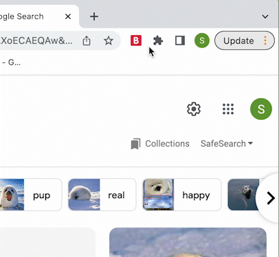

MP0 Reflection
Reflection on Web Extension Assignment
Overview
For this assignment, we made a web extension. I made a page pet extension that lets the user add a cute pet
to the page that they are on. Once the pet is added, the user can click on the pet and have it bounce around the page.
To stop the pet from bouncing, the user just has to click on the pet again. To say goodbye to the pet, the user clicks the 'x'
to the bottom right of the pet.
To start off, I locally downloaded the 'extension-toolkit' folder and copied the code for the 'blocker' extension.
This helped me get a good framework to work off of. To start my code, I formatted the popup. I found a cute pixel gif of a pet on Google
and then put it in the popup. I also changed the text to fit it a bit better. With the popup semi-done, I moved on to making the pet appear on the page.

My first step of making the pet go on the page was to figure out how to put the gif of the cute seal where the block would be, which was a bit difficult for me to figure out, but I was able to modify the code and add in the gif. I then made sure the background of the gif was transparent and formatted the pet to my preferences. After successfully implementing the pet in the space of the block, I then changed the 'delete' button to be an icon. I wanted to add in another feature to the pet, so I decided to make it bounce around the page. I looked up some tutorials and examples that others posted online and then made the seal bounce around the page through using a linear infinite alternate animation on the x and y axis of the pet. I made the pet look like it was bouncing through @keyframes on the x and y axis and then subtracting the dimensions of the actual pet:
transform: translateX(calc(100vw - 200px)).
To stop the pet, the user just has to click on the pet again. The checkmark in the popup makes the all the pets visible or invisible, so if the pets get too overwhelming the
user can just click on the checkmark to make them all go away.

I then went back to focusing on the popup. I made a simple icon in Figma to use as a cover for this portfolio as well as use for the extension icon. I put that as the icon for the extension, and then modified the button and added some text to tell the user that they can click on the seal to make it bounce around the screen.


Issues
I had a hard time initially downlaoding VS Code and Github, and setting everything up was a little confusing for me. However, it got easier with getting reaquainted with coding again (it has been a couple years). I also had issues pushing to Github, but after some time it somehow began to work again. Something that helped me a lot was knowing when to ask for help or stop and take a break and revist my work, because I tend to get frustrated. This is my first time front end coding and the first coding class I've taken in a year or two. I think that my biggest mountain to climb was just relearning how coding works, how to format things, and reminding myself to have patience. In past classes, I haven't really enjoyed coding that much, but I am optimistic that this class will help me have fun with coding :)
CSS Transition
This CSS transition took me a bit of time to figure out, but I'm happy with how it looks. I wanted to have a hover transition that displayed the name of the tab with a pink background. I started out with changing the images and then doing some reasearch on how others have achieved a similar effect. I then made each of the images their own container, and used a pink overlay to have a background for the text. The group of tabs are in a big container to help with sectioning. I chose this transition because I thought it would be a fun and interactive way to learn about each page that I have on my portfolio and inform the user about the pages on the site. I also did this because I chose a very minimal icon style which doesn't necessarily give a lot of information about each project. Another transition I utilized was having the nav icons jiggle a little when the user hovers over them. I think if I did this again, I would prioritize having a plan for how I want my portfolio to look like so I am not backtracking and making things more complicated for myself. Here is what the CSS transmission looks like:
Helpful Links
Some ideas for the future include:
- https://stackoverflow.com/questions/9456289/how-to-make-a-div-visible-and-invisible-with-javascript
- having more animations or interactive features on home and bio pages
- look up other formats for portfolios and try to implement other cool features
Helpful Links and Kudos
Some ideas for the future include:
- help with making the pet invisible: https://stackoverflow.com/questions/9456289/how-to-make-a-div-visible-and-invisible-with-javascript
- help with bouncing the pet around the page: https://css-tricks.com/bounce-element-around-viewport-in-css/
- my friend Ethan helped me!